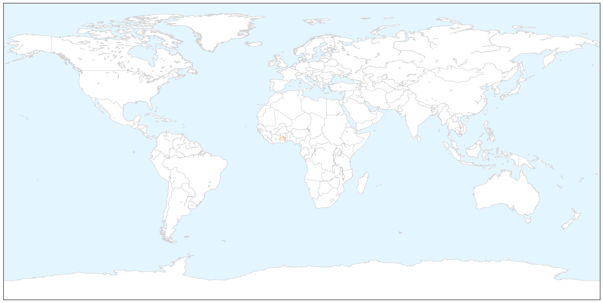

Influenza
30-Day Web Trend
0 alerts, 0 warnings

30-Day Twitter Trend
1 alerts, 0 warnings

Article Locations

Article Confidences

Top Articles:
- 1.000
- FluWatch report: January 25 to January 31, 2015 (Week 4)
- 0.999
- Flu jab given to millions is 'useless'
- 0.998
- Snapshot of flu in Maryland
- 0.996
- Hospital claims it warned last month of mutated flu strain not covered by jab
- 0.996
- 4 killed by flu in Czech Republic
- 0.991
- Severe flu cases steady
- 0.986
- UMD to students, staff with flu, fever
- 0.974
- Flu jab 'ineffective' for 97 per cent of patients
- 0.971
- Public health officials knew months ago about UK flu vaccine mismatch
- 0.952
- Flu Epidemic Declared in Puerto Rico
- 0.939
- Visiting restricted at two hospitals due to flu outbreak
- 0.921
- Flu Epidemic Declared in Puerto Rico
- 0.892
- Government 'knew flu jabs were useless' almost one year ago
- 0.778
- VOA, USAID Discuss Importance of Media in Global Health
- 0.659
- Bird flu: Firm educates Plateau poultry farmers on bio-security
- 0.577
- 100-year-old woman left waiting on hospital trolley for 24 hours
Top Tweets:
-
No tweets found for Feb 06, 2015
Cholera
30-Day Web Trend
8 alerts, 7 warnings

30-Day Twitter Trend
0 alerts, 0 warnings

Article Locations

X

Article Confidences

Top Articles:
Top Tweets:
-
No tweets found for Feb 06, 2015